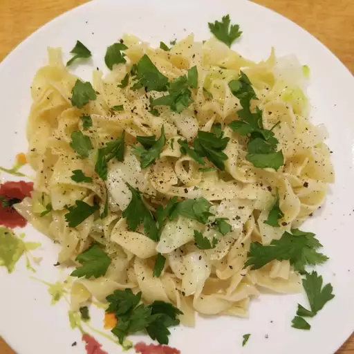

Haluski

This haluski recipe is made with buttery egg noodles, fried cabbage, and onions. It's a great, flavorful dish!
Ingredients:
- 1 (16 ounce) package medium-wide egg noodles
- 1 cup butter, divided
- 2 large onions, chopped
- 2 small heads cabbage, cored and cut into 1-inch pieces
- salt and ground black pepper to taste
Directions:
- Preheat the oven to 300 degrees F (150 degrees C).
- Fill a large pot with lightly salted water and bring to a rolling boil. Stir in egg noodles and return to a boil. Cook noodles uncovered, stirring occasionally, until tender but slightly firm, about 5 minutes. Drain well and set aside.
- Melt 1/2 cup butter in a large skillet over medium-low heat. Add onions; cook and stir until translucent, 5 to 10 minutes.
- Add cabbage and remaining 1/2 cup butter to onions; cook and stir until cabbage is softened but not browned, 5 to 8 minutes. Season with salt and black pepper.
- Place cooked noodles and cabbage mixture in a large roasting pan; stir gently to combine. Sprinkle with more salt and black pepper, if desired.
- Bake in the preheated oven until golden brown on top, 30 to 40 minutes.